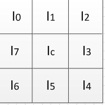
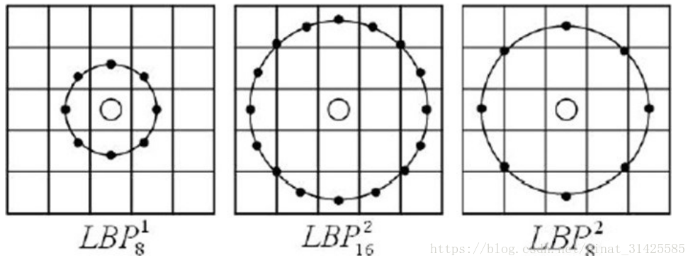
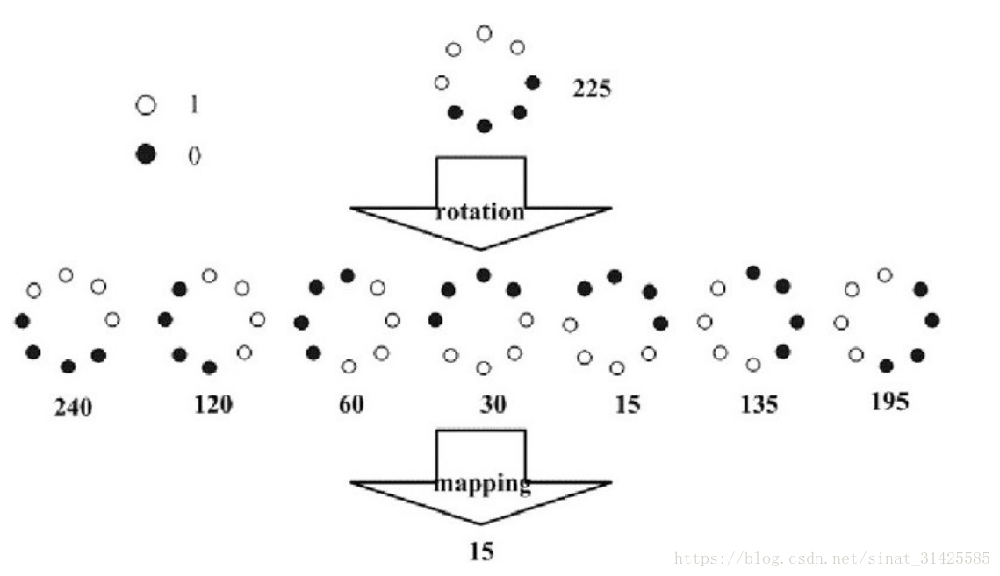

传统最常用到的几种特征分别为、LBP特征及HOG特征，这两种特征描述了两种不同的局部信息：
(1) LBP(Local Binary Patterns)描述的是图像在局部范围内对应的纹理信息。
(2) HOG(Histogram of Oriented Gradient)描述的则是图像在局部范围内对应的形状边缘梯度信息。
这两种特征在传统图像处理和机器学习领域都得到了广泛的应用，在此做一个总结，为后续学习更新的技术做一个铺垫。
HOG（方向梯度直方图）
广泛用于计算机视觉领域和图像处理中的特征提取，它具有良好的不变性。
主要思想：
一副图片的边缘或轮廓，具有较大的梯度变化，因此，计算像素的梯度来描述边缘或轮廓信息也就顺其自然。
具体实现方法：
针对一副图片，多个像素（比如66）组成一个单元（cell），多个单元（比如22）组成一个块（block），将多个block提取到的特征进行联接得到的即是一副图片最后的HOG特征。
提高性能：
在block层面对局部直方图进行归一化，方法：先计算各直方图在这个块（block）中的密度，根据这个密度对块（block）中的单元（cell）进行归一化。
能够对光照变化和阴影获得更好的效果。
优点：
HOG是在图像的局部单元（cell）上进行操作，因此它对图像的几何以及光学的形变具有良好的不变性。其次，在粗的空域抽样、精细的方向抽样以及较强的局部光学归一化等条件下，只要行人大体上能够保持直立的姿势，可以容许行人有一些细微的肢体动作，这些细微的动作可以被忽略而不影响检测效果。因此HOG特征是特别适合于做图像中的人体检测的。
提取HOG特征的过程：
（1）将RGB图像转化为灰度图像。
（2）利用Gamma对灰度图像进行归一化，降低光照的影响。
（3）对图片每个像素计算梯度。
（4）划分cell（如66像素/cell）。
（5）统计每个cell的梯度直方图，即可形成每个cell的descriptor。
（6）将每几个cell组成一个block（例如33个cell/block），一个block内所有cell的特征descriptor串联起来便得到该block的HOG特征descriptor。

组合完之后，每个block表示的向量大小为4x9=36，如果图片大小为128x64，那么cell的个数为：128/8x64/8=16x8，对应block个数为：(16-2+1)*(8-2+1)=15x7=105个，因此，最终得到hog特征的维度为36x105=3780维。
（7）将图像内的所有block的HOG特征descriptor串联起来就可以得到该image（你要检测的目标）的HOG特征descriptor了。这个就是最终的可供分类使用的特征向量了。
LBP（局部二值模式）
LBP（Local Binary Pattern，局部二值模式）是一种用来描述图像局部纹理特征的算子；它具有旋转不变性和灰度不变性等显著的优点。
LBP特征的描述
原始的LBP算子定义为在33的窗口内，以窗口中心像素为阈值，将相邻的8个像素的灰度值与其进行比较，若周围像素值大于中心像素值，则该像素点的位置被标记为1，否则为0。这样，33邻域内的8个点经比较可产生8位二进制数（通常转换为十进制数即LBP码，共256种），即得到该窗口中心像素点的LBP值，并用这个值来反映该区域的纹理信息。如下图所示：

LBP的改进版本：
原始的LBP提出后，研究人员不断对其提出了各种改进和优化。
（1）圆形LBP算子：
基本的 LBP算子的最大缺陷在于它只覆盖了一个固定半径范围内的小区域，这显然不能满足不同尺寸和频率纹理的需要。为了适应不同尺度的纹理特征，并达到灰度和旋转不变性的要求，Ojala等对 LBP 算子进行了改进，将 3×3邻域扩展到任意邻域，并用圆形邻域代替了正方形邻域，改进后的 LBP 算子允许在半径为 R 的圆形邻域内有任意多个像素点。从而得到了诸如半径为R的圆形区域内含有P个采样点的LBP算子；

（2）LBP旋转不变模式
从 LBP 的定义可以看出，LBP 算子是灰度不变的，但却不是旋转不变的。图像的旋转就会得到不同的 LBP值。
Maenpaa等人又将 LBP算子进行了扩展，提出了具有旋转不变性的 LBP 算子，即不断旋转圆形邻域得到一系列初始定义的 LBP值，取其最小值作为该邻域的 LBP 值。
下图给出了求取旋转不变的 LBP 的过程示意图，图中算子下方的数字表示该算子对应的 LBP值，图中所示的 8 种 LBP模式，经过旋转不变的处理，最终得到的具有旋转不变性的 LBP值为 15。也就是说，图中的 8种 LBP 模式对应的旋转不变的 LBP模式都是00001111。

（3）LBP等价模式
一个LBP算子可以产生不同的二进制模式，对于半径为R的圆形区域内含有P个采样点的LBP算子将会产生P2种模式。很显然，随着邻域集内采样点数的增加，二进制模式的种类是急剧增加的。例如：5×5邻域内20个采样点，有220＝1,048,576种二进制模式。如此多的二值模式无论对于纹理的提取还是对于纹理的识别、分类及信息的存取都是不利的。同时，过多的模式种类对于纹理的表达是不利的。例如，将LBP算子用于纹理分类或人脸识别时，常采用LBP模式的统计直方图来表达图像的信息，而较多的模式种类将使得数据量过大，且直方图过于稀疏。因此，需要对原始的LBP模式进行降维，使得数据量减少的情况下能最好的代表图像的信息。
为了解决二进制模式过多的问题，提高统计性，Ojala提出了采用一种“等价模式”（Uniform Pattern）来对LBP算子的模式种类进行降维。Ojala等认为，在实际图像中，绝大多数LBP模式最多只包含两次从1到0或从0到1的跳变。因此，Ojala将“等价模式”定义为：当某个LBP所对应的循环二进制数从0到1或从1到0最多有两次跳变时，该LBP所对应的二进制就称为一个等价模式类。如00000000（0次跳变），00000111（只含一次从0到1的跳变），10001111（先由1跳到0，再由0跳到1，共两次跳变）都是等价模式类。除等价模式类以外的模式都归为另一类，称为混合模式类，例如10010111（共四次跳变）（这是我的个人理解，不知道对不对）。
通过这样的改进，二进制模式的种类大大减少，而不会丢失任何信息。模式数量由原来的2P种减少为 P ( P-1)+2种，其中P表示邻域集内的采样点数。对于3×3邻域内8个采样点来说，二进制模式由原始的256种减少为58种，这使得特征向量的维数更少，并且可以减少高频噪声带来的影响。